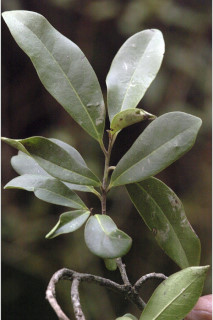
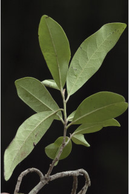
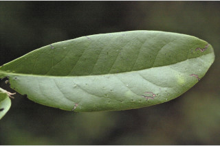

Images :




| Habit : | Trees up to 12 m tall. |
| Leaves : | Leaves simple , alternate , distichous ; petiole 0.5-1.0 cm long, canaliculate , glabrous ; lamina 5-13 x 1.5-5 cm, usually narrow obovate , apex obtuse to rounded , base acute to cuneate , margin entire , coriaceous , glabrous , midrib canaliculate above; stout beneath; secondary_nerves 6-9 pairs; tertiary_nerves broadly reticulate . |
| Inflorescence / Flower : | Flowers unisexual , dioecious ; male flowers in axillary clusters usually on older branches , yellow; female flowers solitary or in clusters of 2-6, in leaf axils or on older branches . |
| Fruit and Seed : | Berry , subsessile , globose , to 2 cm across; fruiting_calyx reflexed ; seed 1. |